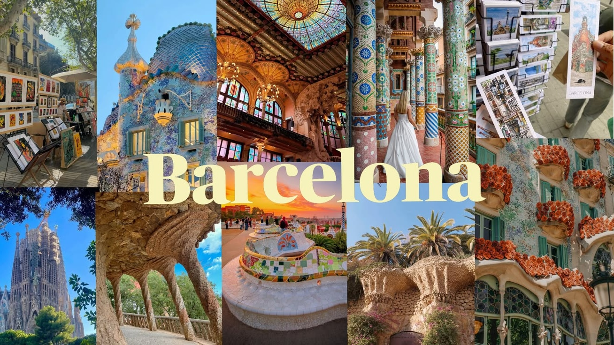

Місце народження: 18 листопада 2006 року, м. Київ.
Освіта: Школа №106, м. Київ;
Національний технічний університет України
«Київський політехнічний інститут імені Ігоря Сікорського».
Хобі:
Улюблені фільми:
Барселона — одне з моїх улюблених міст, у якому я бувала. Це велике та яскраве місто в Іспанії, розташоване на узбережжі Середземного моря. Барселона відома своєю незвичайною архітектурою, зокрема роботами Антоні Гауді, красивими вулицями, пляжами та особливою атмосферою. Найбільше мені сподобалося поєднання історичної архітектури, сучасного міського життя та моря.
